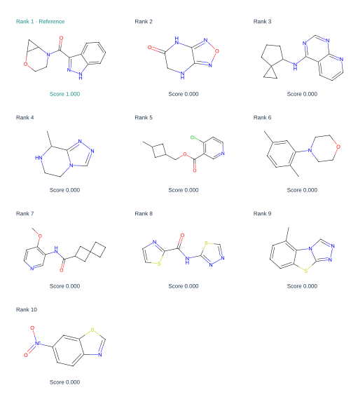

候选重排：IR + Raman + NMR
按候选结构与输入谱图的一致性进行排序。
openSpec 模型通过 Vib2Mol 编码谱通道。生成使用 beam search 和分子匹配分数；检索比较嵌入，候选重排使用匹配头。
本教程读取保存的预测，解释输入输出字段，并评估结果。最后给出在新数据集上运行模型的命令。
import json, sys, io
from pathlib import Path
from IPython.display import display, Markdown, SVG
root = next((p for p in [Path.cwd(), *Path.cwd().parents] if (p / 'openmolspec_bench').is_dir()), None)
if root is None:
raise RuntimeError('Run from the cloned release repository; see Quick Start')
sys.path.insert(0, str(root / 'scripts'))
from documentation_evidence import load_evidence, compact, recompute, render
from documentation_content import results_table
evidence = load_evidence('spectroscopy.reranking.hc')
print('Task:', evidence['task'])
print('Examples:', len(evidence['examples']))
Task: spectroscopy.reranking.hc
Examples: 3
输入与输出
Field |
Meaning |
|---|---|
|
每个可见通道 1024 个强度点，按 400→4000 cm⁻¹ 排列，并采用 checkpoint 的归一化。 |
|
逐原子位移数组（ppm），参考 ID 和归一化必须与 checkpoint 一致。 |
|
用于排序的分子候选库。 |
Field |
Meaning |
|---|---|
|
候选结构 ID，以及相似度或 ITM 正类分数。 |
|
排序指标、候选池大小及样本来源构成。 |
查看下面的示例记录。长数组显示长度与前几个数值，下载 JSON 可获取完整数组。
for example in evidence['examples'][:3]:
print(json.dumps(compact(example), indent=2, ensure_ascii=False))
{
"sample_id": "ZINCV2-ZINC000646741030",
"input": {
"ir": {
"length": 1024,
"first_values": [
0.15220004320144653,
0.190755695104599,
0.2037702202796936,
0.1804114133119583,
0.1386023461818695,
0.10100352019071579,
0.07402963191270828,
0.05563068017363548
]
},
"raman": {
"length": 1024,
"first_values": [
0.04284051060676575,
0.0596662312746048,
0.059223152697086334,
0.04435715824365616,
0.03070877492427826,
0.02493642456829548,
0.021241741254925728,
0.01620982028543949
]
},
"nmr_h_shifts_ppm": {
"length": 13,
"first_values": [
0.40027499198913574,
0.70107501745224,
3.4114749431610107,
3.4215750694274902,
3.694974899291992,
3.7509748935699463,
3.7543749809265137,
3.904474973678589
]
},
"nmr_c_shifts_ppm": {
"length": 13,
"first_values": [
17.115774154663086,
31.026575088500977,
43.290775299072266,
55.238773345947266,
64.18887329101562,
107.12747192382812,
122.48727416992188,
126.06097412109375
]
}
},
"reference_smiles": "O=C(c1n[nH]c2ccccc12)N1CCOC2CC21",
"ranked_candidates": {
"length": 10,
"first_values": [
{
"smiles": "O=C(c1n[nH]c2ccccc12)N1CCOC2CC21",
"score": 0.9996222257614136,
"reference_match": true
},
{
"smiles": "O=C1CNc2nonc2N1",
"score": 7.865002871199067e-09,
"reference_match": false
},
{
"smiles": "c1cnc2ncnc(NC3CCCC34CC4)c2c1",
"score": 3.756063602505799e-12,
"reference_match": false
},
{
"smiles": "CC1NCCn2cnnc21",
"score": 3.597697443777359e-12,
"reference_match": false
},
{
"smiles": "CC1CC(COC(=O)c2cnccc2Cl)C1",
"score": 2.2303870989698327e-12,
"reference_match": false
},
{
"smiles": "Cc1ccc(C)c(N2CCOCC2)c1",
"score": 1.0110286224754642e-13,
"reference_match": false
},
{
"smiles": "COc1ccncc1NC(=O)C1CC2(CCC2)C1",
"score": 6.975568397644266e-14,
"reference_match": false
},
{
"smiles": "O=C(Nc1nncs1)c1nccs1",
"score": 2.767131786023374e-14,
"reference_match": false
}
]
}
}
{
"sample_id": "ZINCV2-ZINC000307618188",
"input": {
"ir": {
"length": 1024,
"first_values": [
0.0010501602664589882,
0.001077173976227641,
0.0011079054092988372,
0.0011428757570683956,
0.001182809006422758,
0.0012287184363231063,
0.001282043056562543,
0.0013448712415993214
]
},
"raman": {
"length": 1024,
"first_values": [
0.001384648261591792,
0.0013985618716105819,
0.0014195888070389628,
0.001449118135496974,
0.0014892042381688952,
0.0015428988263010979,
0.0016148112481459975,
0.0017120839329436421
]
},
"nmr_h_shifts_ppm": [
7.81897497177124,
8.068975448608398,
8.640475273132324,
9.863274574279785
],
"nmr_c_shifts_ppm": [
130.44387817382812,
141.83348083496094,
143.580078125,
149.91177368164062,
158.37547302246094,
166.07138061523438
]
},
"reference_smiles": "O=C(Nc1nncs1)c1nccs1",
"ranked_candidates": {
"length": 10,
"first_values": [
{
"smiles": "O=C(Nc1nncs1)c1nccs1",
"score": 0.9998117089271545,
"reference_match": true
},
{
"smiles": "O=C1CNc2nonc2N1",
"score": 2.4810551182974372e-11,
"reference_match": false
},
{
"smiles": "O=c1c2ccccc2ncn1-c1cccc2nsnc12",
"score": 2.1118884093764e-13,
"reference_match": false
},
{
"smiles": "Cc1cccc2sc3nncn3c12",
"score": 1.128227027556402e-15,
"reference_match": false
},
{
"smiles": "O=[N+]([O-])c1ccc2ncsc2c1",
"score": 5.617007404279471e-16,
"reference_match": false
},
{
"smiles": "CC(O)c1ccccc1Oc1ccc(C#N)cc1",
"score": 8.01306005945675e-17,
"reference_match": false
},
{
"smiles": "CC1NCCn2cnnc21",
"score": 4.082239555089638e-17,
"reference_match": false
},
{
"smiles": "O=C(c1n[nH]c2ccccc12)N1CCOC2CC21",
"score": 3.002611691391552e-17,
"reference_match": false
}
]
}
}
{
"sample_id": "SDBS-11470",
"input": {
"ir": {
"length": 1024,
"first_values": [
0.08935871720314026,
0.08204560726881027,
0.06426363438367844,
0.04762554168701172,
0.0358852855861187,
0.028361300006508827,
0.023730443790555,
0.020771507173776627
]
},
"raman": {
"length": 1024,
"first_values": [
0.09699014574289322,
0.07799255847930908,
0.05177240073680878,
0.038467276841402054,
0.03500157222151756,
0.039790015667676926,
0.055753812193870544,
0.08332391083240509
]
},
"nmr_h_shifts_ppm": {
"length": 13,
"first_values": [
0.14857499301433563,
1.8962750434875488,
1.9775749444961548,
2.052074909210205,
3.4739749431610107,
4.102375030517578,
4.118774890899658,
5.75677490234375
]
},
"nmr_c_shifts_ppm": {
"length": 11,
"first_values": [
14.861974716186523,
66.47437286376953,
77.42657470703125,
85.4499740600586,
122.57487487792969,
126.18267822265625,
126.50857543945312,
127.87447357177734
]
}
},
"reference_smiles": "CC1=NC(CO)C(c2ccccc2)O1",
"ranked_candidates": {
"length": 10,
"first_values": [
{
"smiles": "CC1=NC(CO)C(c2ccccc2)O1",
"score": 0.9997853636741638,
"reference_match": true
},
{
"smiles": "O=C1CNc2nonc2N1",
"score": 3.2484577094232803e-12,
"reference_match": false
},
{
"smiles": "CC1CC(COC(=O)c2cnccc2Cl)C1",
"score": 1.1506522731158375e-12,
"reference_match": false
},
{
"smiles": "Cc1ccc(C)c(N2CCOCC2)c1",
"score": 4.3932999599372025e-13,
"reference_match": false
},
{
"smiles": "CC1NCCn2cnnc21",
"score": 2.7044959018595813e-14,
"reference_match": false
},
{
"smiles": "CC(=O)N1C(c2ccccc2)C(C)C(O)C(C)C1c1ccccc1",
"score": 2.4940039793021514e-14,
"reference_match": false
},
{
"smiles": "C#CC1(F)CN(C(=O)C(C)n2cccn2)C1",
"score": 2.1797488266401752e-14,
"reference_match": false
},
{
"smiles": "O=c1c2ccccc2ncn1-c1cccc2nsnc12",
"score": 1.0229184917187086e-14,
"reference_match": false
}
]
}
}
评估预测
生成报告 top-k 准确率，排序报告 Recall@k 与 MRR。
表格给出每次运行的数据集与指标。后续代码从绘图使用的预测值重新计算汇总结果。
display(Markdown(results_table(evidence, False)))
print(json.dumps(recompute(evidence), indent=2, ensure_ascii=False))
| Dataset / scope | Model / variant | Metric | Value | | --- | --- | --- | ---: | | recorded sample | recorded model | recall_at_1 | 1 | | recorded sample | recorded model | recall_at_5 | 1 | | recorded sample | recorded model | recall_at_10 | 1 | | recorded sample | recorded model | mrr | 1 | | recorded sample | recorded model | queries | 16 | | recorded sample | recorded model | candidate_pool | 16 | | recorded sample | recorded model | unique_candidates | 16 | | recorded sample | recorded model | tie_policy | stable_candidate_order | | recorded sample | recorded model | top_1_hit_rate | 1 |
{
"scope": "Saved model outputs are shown directly; aggregate metrics are in the run table.",
"recorded_runs": 1,
"real_examples": 3
}
查看结果图
按谱相似度排序的分子候选。
比较预测与参考，查看返回的结构或峰位置。图由上方读取的记录直接生成。
import matplotlib.pyplot as plt
for example_index in range(1):
figure = render('spectroscopy.reranking.hc', evidence, example_index=example_index)
image = io.StringIO()
figure.savefig(image, format='svg', metadata={'Date': None})
display(SVG(image.getvalue()))
plt.close(figure)

运行模型
按任务指南配置环境和权重，在 benchmark runner 中选择本任务，即可评估自己的数据集。
python -m openmolspec_bench run --workspace /path/to/OpenMolSpec \
--tasks spectroscopy.reranking.hc --limit 8 --output results/spectroscopy-reranking-hc.json
参考文献
OpenMolSpec contributors. openSpec models and benchmark training workflows. Source archive, v1.0 (2026). Source
OpenMolSpec contributors. OpenMolSpec: Chemical spectroscopy datasets, models and learning workflows. Software release v1.0 (2026). Source
Yuan, M., Zou, Z. & Hu, W. QMe14S, A Comprehensive and Efficient Spectral Dataset for Small Organic Molecules. arXiv:2501.18876 (2025). Source
Zou, Z., Zhang, Y., Liang, L., Wei, M., Leng, J., Jiang, J., Luo, Y. & Hu, W. A deep learning model for predicting selected organic molecular spectra. Nature Computational Science 3, 957–964 (2023). doi:10.1038/s43588-023-00550-y. Source